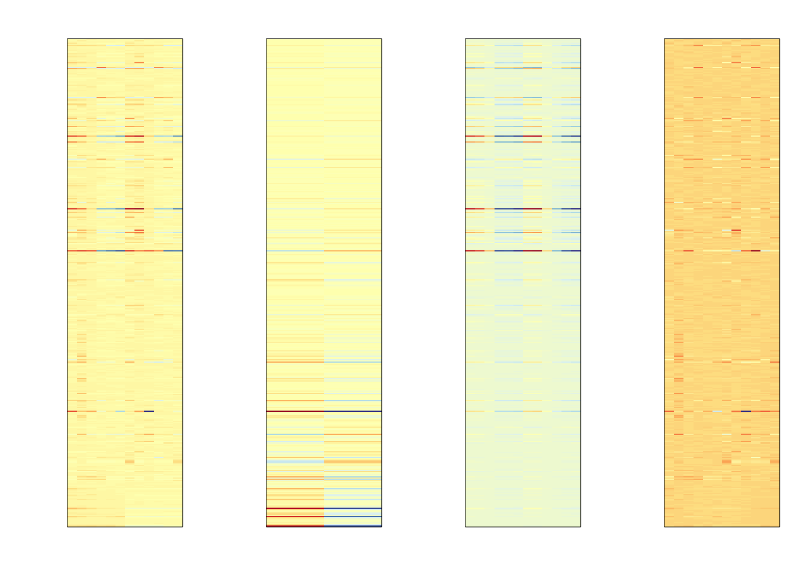

Chapter 10 Demo
10.1 Data input
library(multtest)
library(xcms)
library(faahKO)
# get the demo data in faahKO packages
cdfpath <- system.file("cdf",package = "faahKO")
# show the name of demo data
list.files(cdfpath,recursive = T)## [1] "KO/ko15.CDF" "KO/ko16.CDF" "KO/ko18.CDF" "KO/ko19.CDF" "KO/ko21.CDF"
## [6] "KO/ko22.CDF" "WT/wt15.CDF" "WT/wt16.CDF" "WT/wt18.CDF" "WT/wt19.CDF"
## [11] "WT/wt21.CDF" "WT/wt22.CDF"cdffiles <- list.files(cdfpath, recursive = TRUE, full.names = TRUE)
xset <- xcmsSet(cdffiles)## Warning in `[<-`(`*tmp*`, "object", value = <S4 object of class
## structure("xcmsRaw", package = "xcms")>): implicit list embedding of S4
## objects is deprecated## 250:38 300:103 350:226 400:338 450:431 500:529 550:674 600:847## Warning in `[<-`(`*tmp*`, "object", value = <S4 object of class
## structure("xcmsRaw", package = "xcms")>): implicit list embedding of S4
## objects is deprecated## 250:43 300:128 350:275 400:394 450:500 500:637 550:835 600:1027## Warning in `[<-`(`*tmp*`, "object", value = <S4 object of class
## structure("xcmsRaw", package = "xcms")>): implicit list embedding of S4
## objects is deprecated## 250:25 300:93 350:227 400:337 450:411 500:498 550:640 600:758## Warning in `[<-`(`*tmp*`, "object", value = <S4 object of class
## structure("xcmsRaw", package = "xcms")>): implicit list embedding of S4
## objects is deprecated## 250:19 300:67 350:169 400:258 450:301 500:373 550:488 600:580## Warning in `[<-`(`*tmp*`, "object", value = <S4 object of class
## structure("xcmsRaw", package = "xcms")>): implicit list embedding of S4
## objects is deprecated## 250:24 300:60 350:166 400:254 450:315 500:391 550:501 600:582## Warning in `[<-`(`*tmp*`, "object", value = <S4 object of class
## structure("xcmsRaw", package = "xcms")>): implicit list embedding of S4
## objects is deprecated## 250:31 300:71 350:183 400:280 450:338 500:422 550:532 600:604## Warning in `[<-`(`*tmp*`, "object", value = <S4 object of class
## structure("xcmsRaw", package = "xcms")>): implicit list embedding of S4
## objects is deprecated## 250:41 300:105 350:212 400:319 450:416 500:533 550:684 600:838## Warning in `[<-`(`*tmp*`, "object", value = <S4 object of class
## structure("xcmsRaw", package = "xcms")>): implicit list embedding of S4
## objects is deprecated## 250:27 300:107 350:232 400:347 450:440 500:549 550:712 600:905## Warning in `[<-`(`*tmp*`, "object", value = <S4 object of class
## structure("xcmsRaw", package = "xcms")>): implicit list embedding of S4
## objects is deprecated## 250:24 300:87 350:200 400:293 450:351 500:426 550:548 600:661## Warning in `[<-`(`*tmp*`, "object", value = <S4 object of class
## structure("xcmsRaw", package = "xcms")>): implicit list embedding of S4
## objects is deprecated## 250:22 300:65 350:161 400:243 450:293 500:358 550:483 600:561## Warning in `[<-`(`*tmp*`, "object", value = <S4 object of class
## structure("xcmsRaw", package = "xcms")>): implicit list embedding of S4
## objects is deprecated## 250:28 300:69 350:157 400:229 450:282 500:364 550:493 600:592## Warning in `[<-`(`*tmp*`, "object", value = <S4 object of class
## structure("xcmsRaw", package = "xcms")>): implicit list embedding of S4
## objects is deprecated## 250:30 300:81 350:188 400:280 450:356 500:473 550:618 600:765xset## An "xcmsSet" object with 12 samples
##
## Time range: 2506.1-4147.7 seconds (41.8-69.1 minutes)
## Mass range: 200.1-599.3338 m/z
## Peaks: 4721 (about 393 per sample)
## Peak Groups: 0
## Sample classes: KO, WT
##
## Peak picking was performed on MS1.
## Profile settings: method = bin
## step = 0.1
##
## Memory usage: 0.713 MBxset <- group(xset)## 262 325 387 450 512 575xset## An "xcmsSet" object with 12 samples
##
## Time range: 2506.1-4147.7 seconds (41.8-69.1 minutes)
## Mass range: 200.1-599.3338 m/z
## Peaks: 4721 (about 393 per sample)
## Peak Groups: 403
## Sample classes: KO, WT
##
## Peak picking was performed on MS1.
## Profile settings: method = bin
## step = 0.1
##
## Memory usage: 0.777 MBxset2 <- retcor(xset, method = "obiwarp")## center sample: ko16
## Processing: ko15 ko18 ko19 ko21 ko22 wt15 wt16 wt18 wt19 wt21 wt22xset2## An "xcmsSet" object with 12 samples
##
## Time range: 2506.3-4162.2 seconds (41.8-69.4 minutes)
## Mass range: 200.1-599.3338 m/z
## Peaks: 4721 (about 393 per sample)
## Peak Groups: 0
## Sample classes: KO, WT
##
## Peak picking was performed on MS1.
## Profile settings: method = bin
## step = 0.1
##
## Memory usage: 0.713 MB# you need group the peaks again for this corrected data
xset2 <- group(xset2)## 262 325 387 450 512 575xset2## An "xcmsSet" object with 12 samples
##
## Time range: 2506.3-4162.2 seconds (41.8-69.4 minutes)
## Mass range: 200.1-599.3338 m/z
## Peaks: 4721 (about 393 per sample)
## Peak Groups: 404
## Sample classes: KO, WT
##
## Peak picking was performed on MS1.
## Profile settings: method = bin
## step = 0.1
##
## Memory usage: 0.777 MBxset3 <- fillPeaks(xset2)## /Library/Frameworks/R.framework/Versions/3.3/Resources/library/faahKO/cdf/KO/ko15.CDF
## /Library/Frameworks/R.framework/Versions/3.3/Resources/library/faahKO/cdf/KO/ko16.CDF
## /Library/Frameworks/R.framework/Versions/3.3/Resources/library/faahKO/cdf/KO/ko18.CDF
## /Library/Frameworks/R.framework/Versions/3.3/Resources/library/faahKO/cdf/KO/ko19.CDF
## /Library/Frameworks/R.framework/Versions/3.3/Resources/library/faahKO/cdf/KO/ko21.CDF
## /Library/Frameworks/R.framework/Versions/3.3/Resources/library/faahKO/cdf/KO/ko22.CDF
## /Library/Frameworks/R.framework/Versions/3.3/Resources/library/faahKO/cdf/WT/wt15.CDF
## /Library/Frameworks/R.framework/Versions/3.3/Resources/library/faahKO/cdf/WT/wt16.CDF
## /Library/Frameworks/R.framework/Versions/3.3/Resources/library/faahKO/cdf/WT/wt18.CDF
## /Library/Frameworks/R.framework/Versions/3.3/Resources/library/faahKO/cdf/WT/wt19.CDF
## /Library/Frameworks/R.framework/Versions/3.3/Resources/library/faahKO/cdf/WT/wt21.CDF
## /Library/Frameworks/R.framework/Versions/3.3/Resources/library/faahKO/cdf/WT/wt22.CDFxset3## An "xcmsSet" object with 12 samples
##
## Time range: 2502.9-4162.2 seconds (41.7-69.4 minutes)
## Mass range: 200.1-599.3338 m/z
## Peaks: 6054 (about 504 per sample)
## Peak Groups: 404
## Sample classes: KO, WT
##
## Peak picking was performed on MS1.
## Profile settings: method = bin
## step = 0.1
##
## Memory usage: 0.918 MBlibrary(CAMERA)
dreport <- annotateDiffreport(xset3)## Start grouping after retention time.
## Created 132 pseudospectra.
## Generating peak matrix!
## Run isotope peak annotation
## % finished: 10 20 30 40 50 60 70 80 90 100
## Found isotopes: 68
## Start grouping after correlation.
## Generating EIC's ..
##
## Calculating peak correlations in 132 Groups...
## % finished: 10 20 30 40 50 60 70 80 90 100
##
## Calculating graph cross linking in 132 Groups...
## % finished: 10 20 30 40 50 60 70 80 90 100
## New number of ps-groups: 202
## xsAnnotate has now 202 groups, instead of 132
## Generating peak matrix for peak annotation!
##
## Calculating possible adducts in 202 Groups...
## % finished: 10 20 30 40 50 60 70 80 90 100pdreport <- dreport[,14:25]
library('sva')
library('limma')
lv <- gl(2,6)
mod <- model.matrix(~lv)
svafit <- sva(as.matrix(pdreport),mod)## Number of significant surrogate variables is: 1
## Iteration (out of 5 ):1 2 3 4 5svaX <- model.matrix(~lv+svafit$sv)
lmfit <- lmFit(pdreport,svaX)
tt<- lmfit$coef[,2]*sqrt(lmfit$df.residual)/(2*lmfit$sigma)
Batch<- lmfit$coef[,3]%*%t(svaX[,3])
Signal<-lmfit$coef[,1:2]%*%t(svaX[,1:2])
error <- pdreport-Signal-Batch
##demean for plot
Signal <-Signal-rowMeans(Signal)
mat <- pdreport-rowMeans(pdreport)
library(rafalib)
library(RColorBrewer)
mypar(1,4,mar = c(2.75, 4.5, 2.6, 1.1))
icolors <- colorRampPalette(rev(brewer.pal(11,"RdYlBu")))(100)
image(t(mat),col=icolors,xaxt="n",yaxt="n")
image(t(Signal),col=icolors,xaxt="n",yaxt="n")
image(t(Batch),col=icolors,xaxt="n",yaxt="n")
image(t(error),col=icolors,xaxt="n",yaxt="n")